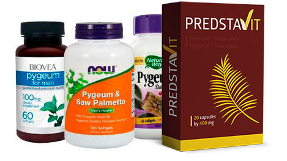
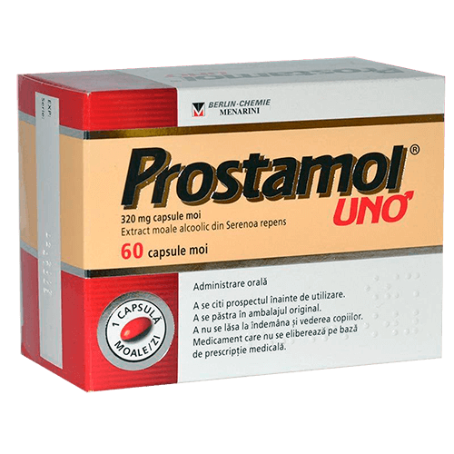

In den Vereinigten Staaten und in Kanada behandeln alle Männer Prostatitis in 2-3 Wochen, ein für alle Mal.
Diese unglaubliche Methode nennt man einen Durchbruch nur für 49EUR mit Rabatt nur bis 26 August !
einschließlich! (Details über diese Methode)
Nur in Italien: käufliche Ärzte verabreden sich mit den Apotheken verbergen gute Arzneimittel und jährlich "heimsen immer mehr Geld" bei den einfachen Menschen ein
Prostatitis ist die verbreitetste Krankheit unter den Männern über 40, und die Ärzte bemerken das leider die Krankheit "junger" wird. Immer jüngere Männer mit diesen "Problemen" die nur 30, 25 und sogar 20 Jahre alt sind besuchen die Ärzte.
So erklären die Ärzte warum diese Krankheit so populär ist : jeder Mann:
- mit sitzender Lebensweise,
- ohne regelmäßiges Geschlechtsleben,
- ohne gesunde Lebensweise,
- mit Vorhandensein einer Infektion
- und Vererbung
- mit viel Stress oder häufigen Erkältungen mit Fieber
ist am ehestens schon krank an Prostatitis. Je mehr Faktoren, desto intensiver und schneller entwickelt sich die Krankheit. Bei manchen Leuten erscheint sie mit 25 Jahren, bei anderen mit 45, das ist ja eine Frage der Zeit.
Symptome der Prostatitis, prüf dich:
Die französischen Urologen erzählen über schreckliche Statistik : über 50% Männer über 40 stoßen irgendwie die Probleme der Prostata. Es ist nicht kompliziert und man braucht nicht Arzt zu sein um zu verstehen ob man an Prostatitis krank sei, Symptome sind einfach und spezifisch
-
Häufige akute Schmerzen
- im Bereich des Unterbauchs oder in den Hoden
- Schmerzen im Penis oder im Leistenbereich
-
Probleme mit der Miktion
- Häufiger Harndrang, akute Schmerzen in der Harnröhre bei der Miktion
- Gefühl dass die Miktion "nicht bis zu Ende geklappt hat",
- Probleme mit der Miktion (sehr schwacher Harnstrahl)
-
Probleme in Bezug auf den Geschlechtsakt
- Sehr schwaches Libido
- Schlechte und kurze Erektion
-
Probleme in Bezug auf die Ejakulation:
- Schnelle Ejakulation
- Schwache Ejakulation
- Ständige physische und geistige Ermüdung
Abgesehen von der Verschlechterung der Ökologie in die letzte Zeit leben viele Männer mit der Prostatitis und ahnen sogar nicht welche Folgen möglich sind und wie es ihr weiteres Leben beeinflussen kann.

Übliche Prostatitis

Prostatisches Adenoma
Ohne Behandlung entwickelt sich die Prostatitis sehr schnell und immer führt zum Adenoma der Prostata("Mannestod")
Wir könne die Männer mit dieser Erkrankung teilweise verstehen, besonders unter Berücksichtigung des Niveaus der Medizin in unserem Land. Meistens mach dem Erhalt der Diagnose "Prostatitis " wird die Aufnahme beim Urologen eine schwere jährliche Pflicht. Die Ärzte löschen akute Symptome mithilfe der Arzneimittel, "empfohlen von den Pharmakanten", aber bei jeder Überkühlung oder Störung der Lebensführung, kommt Prostatitis zum « Wiederaufflammen
Wie behandelt man Prostatitis in Deutschland (also wie MAN DARF NICHT behandeln)
Leider in unserem Land, unter Berücksichtigung des Niveaus der Medizin, können Sie sich nie von der Prostatitis zu hundert Prozent befreien, und es ist nicht wichtig wie stark Sie es möchten.
Standardprozedur der Behandlung der Prostatitis in Deutschland
- Der Mann besucht die Klinik. Privatpraxis oder eine Universitätsklinikum, aber in jedem Fall soll man es bezahlen . Sogar falls es die Krankenkasse bezahlt.
- Der Arzt führt die Untersuchung durch, verschreibt viele Analysen und Tests. Einige davon sind sogar unnötig, aber aus Sicherheitsgründen soll man es machen, denn vielleicht kann man beim Patient noch etwas finden, worum man kümmern kann. Außerdem sind alle Analysen zu bezahlen.
- Nach den Analysen diagnostiziert der Arzt die «"Prostatitis" und verschreibt die "empfohlene Arzneimittel»". Verschriebene Arzneimittel sind zur Dämpfung der akuten Symptome der Behandlung, aber nicht für die Behandlung der chronischen Prostatitis bestimmt. Und natürlich empfehlt der Urologe das Arzneimittel der Firmen, deren medizinische Vertreter ihm das größte Einkommen bringen. Es ist allen gut bekannt um welche Arzneimittel es sich handelt .
- Außer den " empfohlenen " Arzneimittel zur Dämpfung der Symptome, verschreiben die Ärzte immer die rektale Massage der Vorsteherdrüse oder die Behandlung mit gleichen Methoden. Das ist eine erniedrigende und sehr unangenehme Prozedur, weil diese Massage man mit einem Finger durch Anus macht . Im Durchschnitt braucht man 10 bis 14 Massagesitzungen. Jede Sitzung soll natürlich bezahlt werden. In den Vereinigten Staaten und in Kanada macht man keine Massage schon über 20 Jahre, weil die modernen Präparate die Prostatitis ohne dies behandeln lassen!
- Außer der Hauptbehandlung, verschreiben oft die Ärzte die Präparate für die Besserung des Sexuallebens, Erhöhung der Spermaqualität, "Regenerierung des Körpers" nach Antibiotika usw.
- Meistens kann nach dieser Behandlung die Prostatitis verschwinden, aber sogar falls sie verschwindet, dann nur für kurze Zeit. Danach kehrt sie zurück mit Doppelstärke. Im Ergebnis hilft"die konservative Therapie" einmal nicht, und der Arzt verordnet eine Vorsteherdrüsenoperation, die sehr oft zur Impotenz führt.
Also, falls du Prostatitis hast, wirst du gezwungen den Ärzten und den Apotheken ungefähr 5000-10000 Euro jährlich ausgeben! In der Tat bilden die Urologen den Kurs der Therapie, gegründet in erster Linie auf den finanziellen Möglichkeiten des Patienten .Und als die "empfohlenen Arzneimittel" nicht mehr helfen, schneiden Sie einfach deine Prostata aus. So gescheht es im Deutschen urologisch - pharmazeutischen Business.
Wie behandelt man Prostatitis in den Vereinigten Staaten und in Kanada (und wie man es behandeln soll)
In den Vereinigten Staaten braucht man für die Behandlung der Prostatitis sogar keine Aufnahme in der Klinik . Bei ersten Symptomen besucht man Apotheke und kauft das Präparat, das schon bekannt und klinisch geprüft ist , bestehend aus den Extrakten von Saw Palmetto (Saw-Palmetto-Extrakt), deren Wirksamkeit zu 98% schon in den 80er nachgewiesen war.
Natürlich nach zahlreichen Prüfungen des Präparats wurde es zum Goldstandard in der Behandlung der Prostatitis "ein für alle Mal" in den Vereinigten Staaten und in Kanada
Natürlich ist dieses Präparat für die Deutsche apothekarische Mafia nichtprofitabel, weil es viel billiger ist den Menschen zu " belügen ", um die Schmerzsymptome jährlich einfach zu dämpfen, als die Krankheit mit einem preisgünstigen Produkt und in Reichweite der Menschen völlig auszuheilen.

Im Unterschied zu unserem Staat ist die Versicherung in den Vereinigten Staaten, in Kanada auch viel besser entwickelt. Die Versicherungsunternehmen interessieren sich nicht für die Menschen, die die Ärzte zweimal jährlich besuchen, weil die Versicherungsunternehmen es bezahlen sollen, und die Honorare der Ärzte sind hoch. Umgekehrt, sie sind dafür interessiert, um die Behandlung schnell und wirksam zu machen. Ein für alle Mal.
In diesen Staaten haben die Interessen der Versicherungsunternehmen die apothekarische Mafia besiegt, und zum Glück der einfachen Männer, ist ein wirksames Mittel für die Behandlung der Prostatitis immer vorhanden ...
Kann die Situation in Deutschland besser werden?
Leider, gibt´s keine positiven Veränderungen in der Arbeit der Apotheken und der deutschen Ärzte, denn das pharmakologische Business milliardenschwer ist, und die wichtigsten Menschen in diesem Gebiet die Einkommen bekommen. Sie wissen es natürlich.
Aber man braucht nicht die Arzneimittel in den Apotheken zu kaufen. Sie können es auf den Sonderseiten im Internet machen. Vor kurzem erschien eines der wirksamsten Präparate PredstaVit auch in Deutschland. Und natürlich haben schon die Leute es sehr hoch geschätzt.
Vergleichen wir, was unterscheidet PredstaVit vom populärsten Präparat für die Behandlung der Prostatitis Prostamol Uno, das man in den Apotheken verkauft
|
PredstaVit |
 Prostamol Uno |
|
|---|---|---|
| Preis: |
Nur |
Fast 52 Euro für 90 Tabletten. Behandlungskurs: 3 Packungen = 156 Euro |
| Wirkung: | Heilt völlig die Prostatitis, sogar chronisch aus. Ein für alle Mal. Nur 1 Kurs der Einnahme. | Es kann nur die akute Symptome der Prostatitis, d.h. Schmerzen und Störungen der Miktion zu verbergen. |
| Zusätzliche Wirkung: | º Verbessert das Libido º Beugt vorzeitigen Samenerguss vor º Verbessert die Manneskraft º Normalisiert die Funktion der Harnblase º Verbessert den Zustand der Blutgefäße |
Erhöhung der Darmperistaltik |
| Nebenwirkungen | Fehlen. Nur natürliche Inhaltsstoffe. | º Bei häufiger Verwendung kann die bösartigen Veränderungen in der Vorsteherdrüse hervorrufen º Baut die Manneskraft ab º Ruft die Darmprobleme hervor º Stört das Immunsystem, trägt der Entwicklung der allergischen Reaktionen bei º Ruft akute Magenschmerzen hervor |
| Wie es arbeitet: | Bewirkt die Vorsteherdrüse insgesamt dank Sonderzusammensetzung aus 6 natürlichen Komponenten, wirkt entzündungshemmend und konsolidierend. Entfernt die ganze pathogene Flora aus der Vorsteherdrüse, verbessert die Struktur und die Funktionen der Vorsteherdrüse. Ist beim chronischen, kongestiven und bakteriellen Prostatitis empfohlen. | Wirkt vorübergehend gegen Schmerzen in der Vorsteherdrüse, maskiert den Verlauf der Erkrankung. Aber nach der Beendigung der Wirkung des Präparats, fängt die Erkrankung wieder an . |
| Inhaltsstoffe: | Natürliche Pflanzenkomponenten und Vitamine | Die einzige natürliche Komponente sind die zerkleinerte Früchte von Saw Palmetto (sogar kein Extrakt!). Im übrigens nur Chemie, Titandioxid; Farbmittel von schwarzem Eisenoxid; Rotfärbung cochenille (E 124) usw. |
| Garantie: | 365-tägige Garantie des Herstellers | keine Garantie |
PredstaVit kann man auf offizieller Webseite kaufen
Vor kurzem erschien eine großmaßstäbliche Aktion, die von den größten pharmazeutischen Ketten gegen dieses Präparat initiiert war. Vielleicht verschwindet es bald aus dem Verkauf. Wir empfehlen PredstaVit für alle Männer zu kaufen, bis es noch möglich ist. Jetzt kostet Präparat nur
Offizielle Webseite PredstaVit in Deutschland
Kommentare
Andreas
Ich bin auch Facharzt für Sexualpathologie und habe volles Verständnis für die Meinung meiner Kollegin — PredstaVit kehren zurück und vermehren die Mannesmöglichkeiten im Hinsicht von Sex. Viele meiner Patienten überschütten mich von den Geschenken für einfaches Mittlertum. Ich empfehle nur ihnen dieses Präparat.
Harald
Ja, das ist ein ausgezeichnetes Präparat. Meine Frau ist jetzt im siebenten Himmel , und vor kurzem wollten wir uns sogar scheiden lassen.
Link
Während der klinischen Untersuchungen wurden keine Nebenwirkungen festgestellt, infolgedessen wurde dieses Präparat für die Männer ab 16 Jahre zur Verwendung erlaubt. Früher ist es einfach unnötig).
Hans-Jürgen
Welche Dauer der Einnahme empfiehlt man?
Link
Hans-Jürgen, der empfohlene Kurs beträgt 21 Tage.
Johann
PredstaVit hat mir aus tiefer Depression rausgezogen. Mit meinen 40 Jahren konnte ich schon nicht mit einer Frau beischlafen. Ich hatte diese Prostatitis satt, dazu eine Menge von kleinen Krankheuten hat in mir den Mann fast unter die Erde gebracht. Dank PredstaVit , schon in einer Woche war ich fast gut in Schuss, und in zwei Wochen schlug ich schon die Rekorde, die ich mit 19 gestellt habe!!! Vielen Dank!
Christian
Ich nahm ein PredstaVit während drei Tage, schon hatte ich erstes Ergebnis, dabei ziemlich ehrenwert!
Charlotte
Wir haben Pantogen vor einem Monat für meinen Mann gekauft. Empfindungen sind wirklich besser als in der Jugend)))
Andreas
Ich meine, dass sportliche Selbstbetätigung beste Prophylaxe der Impotenz ist, natürlich zusammen mit Sex (auch eine gute Sportart))).
Karl-Heinz
Ich habe ach diesen PredstaVit wie im Artikel geschrieben. Meine Frau hat mir bestellt, und ich wollte nicht trinken, Holzkopf. Jetzt tropfe ich mir ein Löffel ein.
Stefan
Aber auf offizieller Webseite gibt man solche Rabatte, dass jeder Rentner es selbst kaufen kann.
Manfred
Doktor sagt wahr, nicht nur Potenz, sondern auch Allgemeinzustand wird besser.
Jürgen
Ich habe PredstaVit für meinen Vater gekauft, einmal rief er an, bat ein gutes Ding dazu finden. Ich surfte im Internet, un da traf ich einige wissenschaftliche Artikel über diesen Pantogen, fasste den Beschluss nämlich diesen auszuwählen. Mein Daddy ich zufrieden, jetzt zanken sie sich mit meiner Mummy fast nicht, er trinkt kein Alkohol mehr, hat keine Zeit dazu viellleicht)
Christian
Wirklich günstig, schon gekauft, in eine Woche werde ich meine Frau bewundern) Wir haben auch gute Nachbarinnen)))